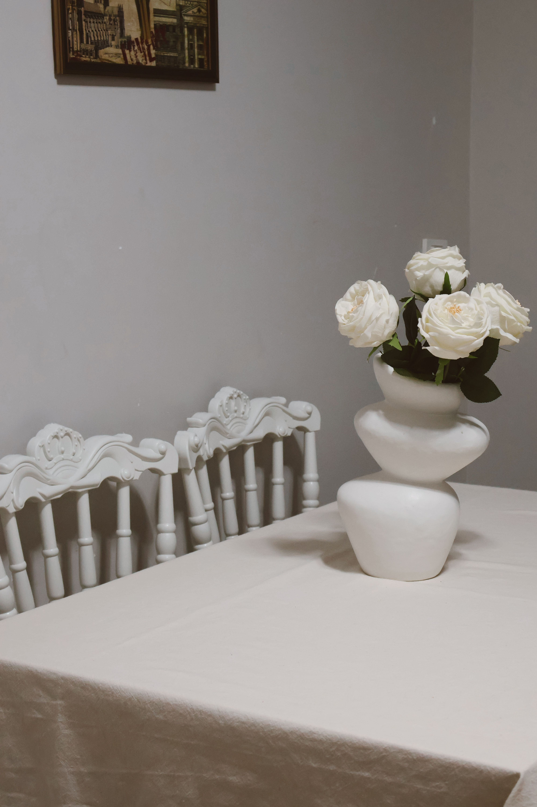
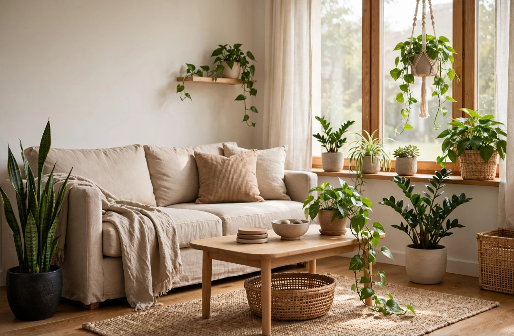

En este artículo
- Introducción
- Medir antes de comprar: el paso que evita más errores
- Elegir según la función y los hábitos de la casa
- Distribución, proporción y relación entre los muebles
- Cómo evaluar materiales, construcción y calidad
- Crear una casa coherente sin comprar conjuntos completos
- Método práctico
- Preguntas frecuentes
- Conclusión
Introducción
Descubre cómo elegir los muebles adecuados para cada espacio de la casa con criterios prácticos de tamaño, materiales, mantenimiento, seguridad, funcionalidad y estilo para tomar una decisión adecuada.
Una buena elección empieza por comprender las condiciones reales del espacio y el uso que tendrá cada elemento. Antes de comprar, conviene medir, comparar materiales, revisar cuidados y pensar cómo cambiarán las necesidades con el tiempo.
Medir antes de comprar: el paso que evita más errores
Antes de enamorarte de un sofá, mesa o armario, mide la habitación. Anota ancho, largo y altura, pero también puertas, ventanas, radiadores, enchufes y recorridos. Un mueble puede caber físicamente y aun así bloquear una apertura o dejar una circulación incómoda.
Mide también accesos: portal, ascensor, escalera, pasillo y puerta de la habitación. Los muebles grandes deben llegar hasta su ubicación final. Revisa si el producto se entrega desmontado y cuáles son las dimensiones de los paquetes.
Utiliza cinta de pintor para marcar la huella del mueble en el suelo. En piezas altas, puedes marcar su altura en la pared. Esta prueba ayuda a comprender la escala mucho mejor que una fotografía de catálogo.
Deja espacio para abrir cajones y puertas y para mover sillas. En un comedor, por ejemplo, no basta con que la mesa quepa: las personas necesitan sentarse y levantarse cómodamente. La circulación forma parte de la medida.
Elegir según la función y los hábitos de la casa
Un mueble debe responder a cómo vives. Un sofá muy formal puede ser poco práctico si la familia lo utiliza a diario para descansar. Una mesa enorme puede ocupar demasiado espacio si solo recibes visitas unas pocas veces al año. Define las actividades habituales antes de decidir.
En hogares pequeños, los muebles multifuncionales pueden ayudar, pero deben ser realmente cómodos en todas sus funciones. Un sofá cama difícil de abrir o una mesa extensible que nunca utilizas no aporta valor solo por tener mecanismos.
Piensa en almacenamiento. Si necesitas guardar muchos objetos, un mueble cerrado puede resultar más útil que una pieza visualmente ligera. Si ya tienes suficiente almacenamiento, quizá convenga priorizar sensación de amplitud.
Considera también a quienes usan la casa: niños, personas mayores, mascotas o alguien con movilidad reducida pueden cambiar necesidades de altura, estabilidad, limpieza y resistencia.
Distribución, proporción y relación entre los muebles
La habitación necesita una jerarquía. Decide qué pieza será principal y construye la distribución alrededor de ella. En un dormitorio suele ser la cama; en el comedor, la mesa; en el salón puede ser el sofá o una zona de conversación.
No pegues todos los muebles a las paredes automáticamente. En habitaciones amplias, separar piezas puede crear zonas más acogedoras. En espacios estrechos, aprovechar el perímetro puede ser necesario. La decisión depende de medidas y circulación.

Combina escalas. Muchos muebles pequeños pueden generar más desorden visual que unas pocas piezas bien proporcionadas. Al mismo tiempo, un sofá o armario descomunal puede dominar toda la habitación.
Observa la relación entre alturas. Una mesa auxiliar debería ser cómoda desde el asiento; un televisor necesita una posición adecuada; estantes muy altos deben reservarse para objetos de uso poco frecuente. La proporción no es solo estética, también mejora ergonomía.
Cómo evaluar materiales, construcción y calidad
Revisa la estructura antes de fijarte únicamente en el acabado. En muebles de madera o tableros, pregunta por materiales y uniones. En tapizados, comprueba estabilidad del armazón, firmeza del asiento y posibilidad de limpiar o sustituir fundas cuando corresponda.
Abre cajones y puertas varias veces. Deben moverse de forma uniforme y sin roces anormales. Observa bisagras, guías, patas y puntos de unión. Una pieza de exposición puede revelar cómo envejece el producto con el uso.
La calidad adecuada depende de la función. Una mesa de uso diario necesita resistencia distinta a una consola decorativa. Invierte más en piezas que soportan peso, movimiento o uso continuo.
Consulta garantía, disponibilidad de repuestos y cuidados recomendados. Poder reemplazar una funda, una bisagra o una pieza prolonga la vida útil y puede ser más importante que un acabado de moda.
Crear una casa coherente sin comprar conjuntos completos
Una casa con personalidad no necesita que todos los muebles pertenezcan a la misma colección. Repetir algunos materiales, colores o líneas puede unir piezas de diferentes épocas. Una mesa heredada puede convivir con sillas contemporáneas si existe equilibrio.
Define una paleta sencilla para los elementos grandes y utiliza accesorios para introducir cambios. Sofás, armarios y mesas suelen permanecer muchos años; cojines, lámparas y objetos decorativos son más fáciles de actualizar.
Evita comprar todo en una sola jornada. Vivir con las piezas principales permite descubrir qué falta realmente. A veces el espacio vacío mejora la circulación y no necesita ser ocupado.
Antes de la compra final, revisa presupuesto, medidas, mantenimiento y plazo de entrega. El mejor mueble no es el más llamativo, sino el que encaja en la habitación, cumple su función y puede mantenerse durante mucho tiempo.
Un método práctico para tomar la decisión final
Antes de comprar, escribe tres columnas: necesidades obligatorias, preferencias y límites. En la primera coloca aquello que afecta al funcionamiento; en la segunda, color, estilo o acabados; en la tercera, presupuesto, medidas y mantenimiento. Este ejercicio evita que una característica atractiva haga olvidar un requisito esencial.
Compara varias opciones utilizando los mismos criterios. No te limites a fotografías: revisa dimensiones, composición, instrucciones, garantía y condiciones de uso. Cuando sea posible, observa una muestra físicamente y comprueba cómo se comporta con la luz y los materiales del entorno.
Calcula también el coste de mantener la elección. Productos de limpieza, tratamientos periódicos, repuestos o instalación pueden cambiar el presupuesto real. Una opción razonable es aquella que puedes cuidar correctamente sin convertir el mantenimiento en una carga.
Finalmente, evita decidir con prisa. Una compra que permanecerá años merece una revisión adicional. Si todavía tienes dudas entre dos alternativas, vuelve a la función principal y elige la que resuelva mejor el uso cotidiano.
Qué comprobar justo antes de comprar
Revisa una última vez medidas del producto y del recorrido de entrega. Confirma acabado, orientación de módulos, plazo, montaje, política de devolución y garantía. En muebles personalizados, verifica por escrito todas las especificaciones antes de aprobar la fabricación.
Si compras online, busca fotografías de detalle y materiales, no solo imágenes ambientales. Lee instrucciones de montaje y peso cuando estén disponibles. Esta comprobación final reduce sorpresas y facilita comparar ofertas que inicialmente parecen equivalentes.
Qué priorizar en cada habitación
En el salón, el sofá suele concentrar uso y presupuesto. Evalúa número de personas, profundidad, limpieza y circulación. Las mesas auxiliares deben quedar al alcance sin cerrar recorridos. Si el salón también funciona como comedor o despacho, utiliza la distribución para separar actividades sin saturar.
En el dormitorio, la cama y el almacenamiento son prioritarios. Mide el espacio libre a ambos lados y la apertura de armarios. Mesillas pequeñas pueden ser suficientes si solo necesitas una lámpara y pocos objetos. Un banco al pie de cama solo merece ocupar espacio si realmente se utiliza.
En el comedor, la mesa debe adaptarse al número habitual de personas. Las sillas necesitan espacio para retirarse. En recibidores, el mobiliario debe ser poco profundo para no estrechar el paso. Cada habitación pide soluciones distintas.
Tapicerías y superficies para el uso real
El color de una tela importa, pero su resistencia y limpieza pueden ser más decisivas. En hogares con niños o mascotas, revisa instrucciones de mantenimiento, posibilidad de desenfundar y comportamiento frente al uso frecuente. Una textura delicada puede ser adecuada en una silla ocasional y poco práctica en el sofá principal.
En mesas y escritorios, piensa en rayones, calor y humedad. Madera, laminados, piedra, vidrio y otros materiales responden de manera diferente. Utiliza protectores cuando corresponda y sigue las recomendaciones del fabricante.
Prueba el tacto. Superficies bonitas en fotografías pueden sentirse frías, ásperas o incómodas. Los muebles se utilizan con el cuerpo y las manos, por lo que la experiencia física forma parte de la calidad.
Errores frecuentes al amueblar una casa
Comprar conjuntos completos por rapidez puede producir habitaciones rígidas y ocupar más espacio del necesario. Otro error es adquirir muebles antes de definir la distribución. Decide primero dónde irá cada función y después busca las dimensiones adecuadas.

No llenes todos los huecos. El espacio libre permite circular y hace que las piezas importantes destaquen. Si dudas sobre una mesa auxiliar, una butaca o una estantería, espera unas semanas y comprueba si realmente la necesitas.
Evita sacrificar comodidad por una tendencia. Una silla espectacular que no permite sentarse durante una comida larga o un sofá demasiado bajo para quienes lo usan terminarán generando frustración.
Distribuir el presupuesto entre las piezas importantes
No todos los muebles necesitan el mismo nivel de inversión. Destina más presupuesto a piezas que utilizas muchas horas, soportan peso o son difíciles de reemplazar. Un buen colchón, sofá o mesa de uso diario puede merecer prioridad frente a muebles puramente decorativos.
Define un presupuesto total por habitación antes de empezar. Si gastas demasiado en la primera pieza, quizá termines compensando con compras de baja calidad en elementos esenciales. Reserva además una parte para entrega, montaje y accesorios realmente necesarios.
La segunda mano puede ofrecer muebles sólidos a buen precio. Revisa estructura, olores, plagas, humedad y estado de tapicerías. Algunas piezas pueden restaurarse fácilmente; otras costarán más de reparar que comprar nuevas.
Evita financiar una tendencia que no responde a una necesidad. Si el mueble actual funciona, esperar y ahorrar para la pieza correcta suele ser mejor que comprar un sustituto provisional que pronto querrás cambiar.
Elegir muebles que puedan adaptarse a cambios futuros
Las necesidades de una casa cambian. Mesas extensibles, estanterías modulares o muebles que pueden trasladarse entre habitaciones ofrecen flexibilidad. Sin embargo, los mecanismos deben ser sólidos y fáciles de utilizar; una función que requiere demasiado esfuerzo terminará ignorándose.
En viviendas de alquiler, prioriza piezas que puedan desmontarse y adaptarse a otro espacio. Los muebles extremadamente hechos a medida son útiles cuando resuelven un problema permanente, pero pueden tener menos flexibilidad ante una mudanza.
Piensa también en reparación. Fundas reemplazables, patas atornilladas y herrajes estándar pueden prolongar el uso. Un diseño adaptable no necesita parecer provisional: puede ser una inversión pensada para acompañar varias etapas.
Entrega, montaje y primeros días de uso
Antes de la entrega, despeja el recorrido y protege suelos si es necesario. Comprueba el producto al recibirlo y documenta daños antes del montaje. Sigue las instrucciones y utiliza los herrajes previstos; improvisar piezas puede comprometer estabilidad.
Una vez instalado, utiliza el mueble durante varios días antes de completar la decoración alrededor. Así podrás confirmar circulación, comodidad y necesidades reales de iluminación o almacenamiento. Conserva manuales, garantía y referencias para futuros repuestos.
Preguntas frecuentes
¿Cuál es la mejor manera de empezar?
Empieza definiendo las condiciones reales de uso y comparando opciones según el tema de cómo elegir los muebles adecuados para cada espacio de la casa. Medir, observar y revisar las especificaciones evita muchas decisiones equivocadas.
¿Cuánto tiempo se necesita para ver resultados?
La elección puede hacerse en poco tiempo si las necesidades están claras, pero conviene comparar varias opciones y probar muestras o medidas antes de realizar una compra o intervención definitiva.
¿Qué errores deberían evitarse?
Los errores más frecuentes son elegir solo por apariencia, ignorar medidas y condiciones ambientales, no considerar el mantenimiento y utilizar materiales o sistemas que no son apropiados para el uso previsto.
Conclusión
Cómo elegir los muebles adecuados para cada espacio de la casa es más sencillo cuando la decisión combina función, dimensiones, mantenimiento, seguridad y estética. Comparar opciones con criterios concretos permite evitar compras impulsivas y conseguir un resultado que se adapte mejor a la vida cotidiana.